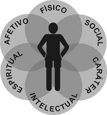
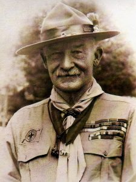
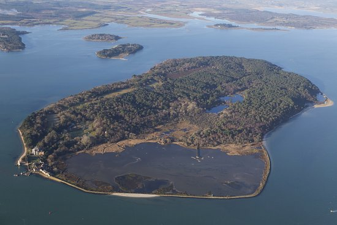
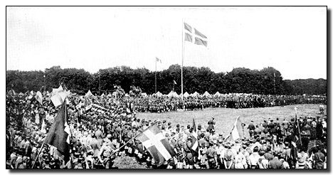
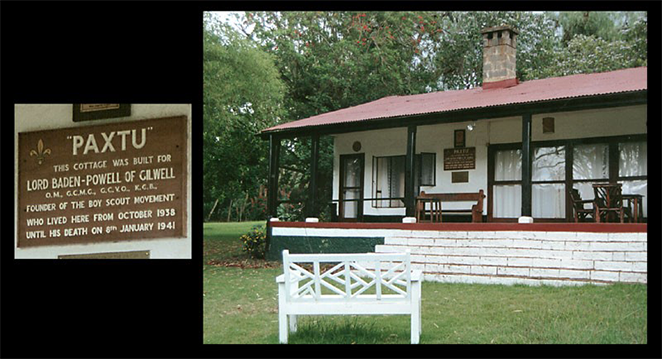
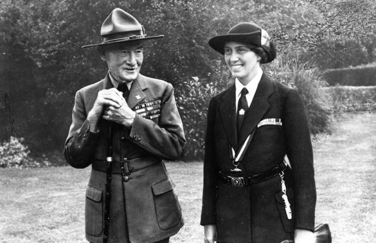

<link rel="stylesheet" type="text/css" href="../css/reset.css">
<link rel="stylesheet" type="text/css" href="../css/escotismo.css">

<section id="movimento">
    <h2> O Movimento Escoteiro</h2>
    <br>
    <div id="movimento-img1">
    </div>
    
    <p>
       Um movimento para jovens, feito por jovens. Essa é principal engrenagem do Movimento Escoteiro: a vitalidade
       das crianças, adolescentes e jovens que passam por nossos caminhos e renovam nossas energias, aliada à
       experiência dos adultos voluntários.
       <Br>

       O Escotismo é um movimento educacional que, por meio de atividades variadas e atraentes, incentiva os jovens
       a assumirem seu próprio desenvolvimento, a se envolverem com a comunidade, formando verdadeiros líderes.
       <Br>
       Acreditamos que, por meio da proatividade e da preocupação com o próximo e com o meio ambiente, podemos
       formar jovens engajados em construir um mundo melhor, mais justo e mais fraterno.
    </p>
    <Br>

    <div id="desenvolvimento">
        
    </div>

    <p>
       É verdadeiramente no grupo escoteiro que o Escotismo acontece. Os jovens são divididos conforme sua
       faixa etária para que o Programa Educativo possa ser trabalhado em todas as áreas de desenvolvimento
       (físico, intelectual, social, afetivo, espiritual e de caráter) com base nas características individuais de
       cada fase. O Programa Educativo ainda se preocupa em estar inserido no cotidiano dos jovens, de acordo com
       suas necessidades de crescimento e do meio onde os jovens se desenvolvem, se adaptando a diferentes
       realidades e respeitando sua autonomia. <br>
        Apartidário, o Movimento Escoteiro valoriza a participação juvenil em esferas políticas, participando de
        processos de decisão em Conselhos, Conferências e demais grupos de trabalho. O apoio político não leva em
        conta partidos, mas o compromisso do parlamentar que se une à União Parlamentar Escoteira do Brasil de atuar
        de acordo com os princípios e propostas do Escotismo.
        Para se juntar ao Movimento Escoteiro como jovem é preciso ter entre 6,5 e 21 anos; a partir daí a atuação
        se dá como adulto voluntário, sem limite de idade.
    </p>
    <br>
</section>

<!-- HISTORIA do escotismo-->
<section id="movimento">
    <h2> História do Movimento </h2>

    <div id="historia-img1">
        
        <p>Robert Stephenson Smyth Baden-Powell</p>
    </div>

    <p>
        O Movimento Escoteiro foi fundado em 1907 pelo General Robert Baden-Powell, na Inglaterra. Sem pretender
        trazer
        a rigidez militar para o Movimento Escoteiro, Baden-Powell aproveitou os elementos positivos de fomento à
        camaradagem, iniciativa, coragem e autodisciplina, bem como técnicas que seriam úteis no desenvolvimento dos
        jovens para criar um movimento educacional.<br>
        Baden-Powell utilizou-se dos saberes e habilidades que aprendeu no serviço militar em lugares agrestes da
        índia e da África, quando se tornou conhecido como “Impisa”, (“o lobo que nunca dorme”, em português, pelas
        suas
        missões noturnas) para ajudar a juventude. Pode-se dizer que a faísca iniciadora do Escotismo foi a
        publicação do livro “Ajudas à Exploração Militar” (Aids To Scouting, 1899, de B-P), que continha informações
        para os
        militares sobre seguir pistas, exploração e técnicas que se referiam à vida em campo, e que os rapazes
        ingleses usaram para se divertir de maneira aventurosa. Baden-Powell foi considerado um herói por haver
        resistido
        vitoriosamente a um cerco de 217 dias em Mafeking, África do Sul, durante a Guerra dos Bôeres.<br>
        Percebendo o enorme interesse dos jovens em aprender e replicar as técnicas citadas no livro, Baden-Powell
        empenhou-se em adaptá-lo para ser um acréscimo atraente ao programa das escolas britânicas. Reuniu
        experiências e as atividades dos exploradores para criar algo que pudesse realmente ser utilizado na
        educação e formação dos jovens: o Escotismo.
    </p>
    <br>
    <br>

    <div id="historia-img2">
        
        <p>ilha de Brownsea, dias atuais</p>
    </div>

    <p>
        No dia 1º de agosto de 1907, ele levou 20 rapazes para a Ilha de Brownsea, no Canal da Mancha, para realizar
        o primeiro acampamento escoteiro do mundo – essa era a forma que B-P havia encontrado para testar suas
        ideias.
        Ao longo de oito dias, ele aplicou diversos ensinamentos sobre vida em equipe e ao ar livre, acampamentos,
        fogueiras, jogos, rastreamento, observação e dedução, técnicas de primeiros socorros, alimentação e boas
        ações.
        Ele havia pensado nessa diversidade de práticas para que os jovens pudessem voltar para casa mais
        independentes e com novas habilidades.<br>
        O acampamento foi um sucesso e, no início do ano seguinte, Baden-Powell lançou as seis edições do guia
        “Escotismo para Rapazes”, sem sonhar que estaria fundando o maior movimento educacional de jovens do
        planeta. A busca pelos manuais foi tão grande que ocasionou o surgimento de Tropas Escoteiras por toda
        parte. Em vista
        dessa inesperada expansão do Movimento, B-P solicitou que fosse passado para a reserva (aposentadoria) do
        Exército, a fim de dedicar-se à sua “segunda vida”, como chamava o Escotismo. Passou, então, a viajar por
        diversos países, para orientar a constituição e o trabalho das associações escoteiras e para fazer do
        Escotismo uma grande fraternidade mundial.
    </p>
    <br>
    <br>

    <div id="historia-img3">
        
        <p>Abertura 1 Jamboree Mundial</p>
    </div>
    <br>

    <p>
        O Escotismo foi crescendo, ramificando-se também numa vertente para as meninas (em 1909) e, em 1920, com o
        fim da Primeira Guerra Mundial, reuniu cerca de 8 mil jovens em Londres para o primeiro Jamboree Mundial, o
        maior evento escoteiro do mundo. <br>
    
        Não há como retratar a história do Movimento Escoteiro sem retratar a história de seu fundador, proclamado
        “Chefe Escoteiro Mundial” pela multidão de rapazes presentes ao primeiro grande evento escoteiro. B-P
        dedicou o resto de sua vida à concretização do Movimento Escoteiro, crente que o desenvolvimento dos jovens,
        o respeito ao próximo e a prática de boas ações diárias, poderiam auxiliar a construir um mundo melhor.
    </p>
    </br>
    </br>

    <div id="historia-img4">
        
        <p>Casa de B.P dias atuais</p>
    </div>

    <p id="casa">
        Baden-Powell envelheceu e passou a morar no Quênia, ao lado da mulher, Olave Baden-Powell, que o acompanhou
        em todas as aventuras, atuando para que as meninas também pudessem se divertir e aprender no Movimento
        Escoteiro. B-P faleceu em casa, em 8 de janeiro de 1941.
    </p>

    <div id="historia-img5">
        
    </div>
    <br>

    <p>
        Mesmo com a partida de seu criador, o Escotismo continuou a crescer e a conquistar o coração de crianças,
        jovens e adultos, alcançando mais de 40 milhões de membros em 216 países e territórios.
    </p>
    <br>
    <p class="clear-esquerda"></p>
</section>

<section id="movimento">
    <h2>Escotismo no Brasil</h2>
    <p>
        Em 17 de abril de 1910, encerrando um ciclo de quatro anos de renovação da frota naval brasileira, o
        Encouraçado Minas Gerais chegava ao Brasil, vindo da Europa, com um grupo de oficiais que trazia consigo
         uniformes e acessórios escoteiros, depois de acompanhar o enorme sucesso que o Movimento fazia na
        Inglaterra.
    </p>
    <br>

    <p>
        O grupo logo se organizou para fundar a primeira associação escoteira, chamada de Centro de Boys Scouts do
        Brasil, no Rio de Janeiro. A palavra “escoteiros” só surgiu alguns anos depois, ocupando o lugar do termo
        “scrutar”, adotado assim que o Escotismo chegou ao país.
    </p>
    <br>

    <p>
        Rapidamente o Movimento Escoteiro se espalhou por todo o território nacional, inicialmente com diversas
        associações independentes, até que, em 4 de novembro de 1924, foi criada a União dos Escoteiros do Brasil,
        acompanhando o desejo de B-P de ver o senso de unidade entre os diversos grupos escoteiros em cada país
    </p>
    <br>
</section>
